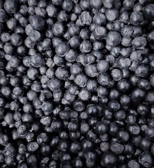
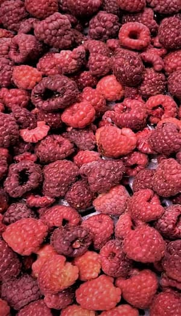
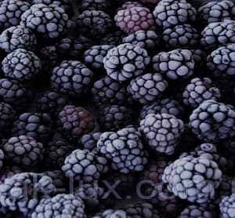
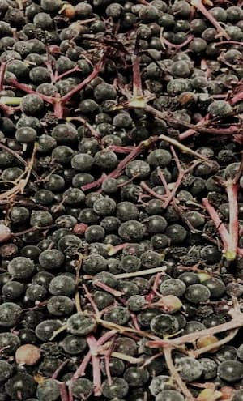
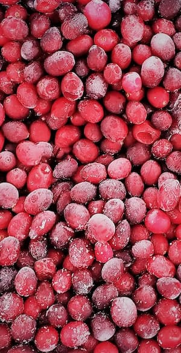
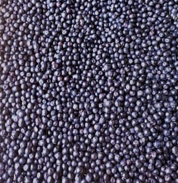
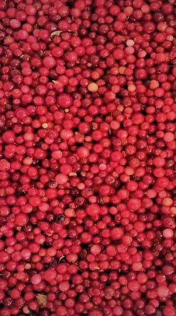

About us
-
SLM is a company that was created with the customer in mind and the highest level of quality and reliability. Over the years, our company has formed several categories of goods for itself and clearly works on the market and supplies some of the entire segment of goods.
-
Our frozen products department currently provides several items of frozen berries: blueberries, raspberries, chokeberries, elderberries, cranberries and blackberries. The entire harvesting process takes place in ecologically clean regions of Ukraine, and freezing takes place in accordance with European standards.
-
We control product quality at all stages of production: from the growing process to sales.
Our conception
-
Fresh
We buy fresh berries directly from people whom colect it from forest
-
Quality
After that we freeze it and prepare berries of perfect quality
-
Product
Than we pack and deliver products to your company
Products
-

blueberries
Blueberry is a wild berry that is collected in the northwestern region of Ukraine in the Carpathian Mountains. It is often used in the confectionery industry and as a natural additive to food products. -

raspberries
Raspberry is a berry that is grown on farms. Due to its multi-functionality, it has been widely distributed in the food industry and has long been included in many products. -

blackberry
The blackberries harvested by our company are wild, they are very different from the berries cultivated in the fields. In particular, a strongly pronounced taste and a large amount of microelements. Also, since the berry is wild and collected in ecologically clean areas of the Lviv region, it is extremely useful. -

elder
Elderberry berries have been used for medicinal purposes for a long time. Juices and concentrates for the food industry are also produced from them. -

Cranberry
Cranberry is a wild berry that is collected in the northern regions of our country on the territory of the Ukrainian forest. Thanks to its taste properties, it has become popular in the production of drinks, syrups and sauces. -

chokeberry
Black chokeberry is a very valuable fruit. Its fruits are often used for medicinal purposes, due to the high content of vitamins and useful substances. A natural dye is obtained from chokeberry berries, which is used in the production of food and useful additives. -

Lingonberries
Lingonberry fruits can be useful in medicine and in the food industry. Lingonberries keep well, as they contain natural acids that act as preservatives.